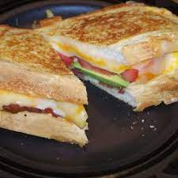

Crunchy Crunchy Toasty

Description
If you're anything like me, the last thing you want to do is spend 2+ hours in the kitchen after a long day of crowd control at school. Make a sandwich.
Ingredients
- bread (Warburton's Seeded Batch)
- strong cheddar cheese
- butter
- cucumber
- ham
- lettuce
- mustard
- cherry tomatos
Steps
- Put your bread in the toaster and wait for it to pop
- Wait for the bread to cool down then add generous amounts of butter to one slide and your mustard to the other
- Add your ham, then cheese, then cucumber, then salad, then tomatos
- Add your mustardy slice on top of the mountain of yum
- Slice your sandwich in half (I prefer down the middle but you can do diagonally if you so prefer)
- Enjoy!
Click here to return to the main page.